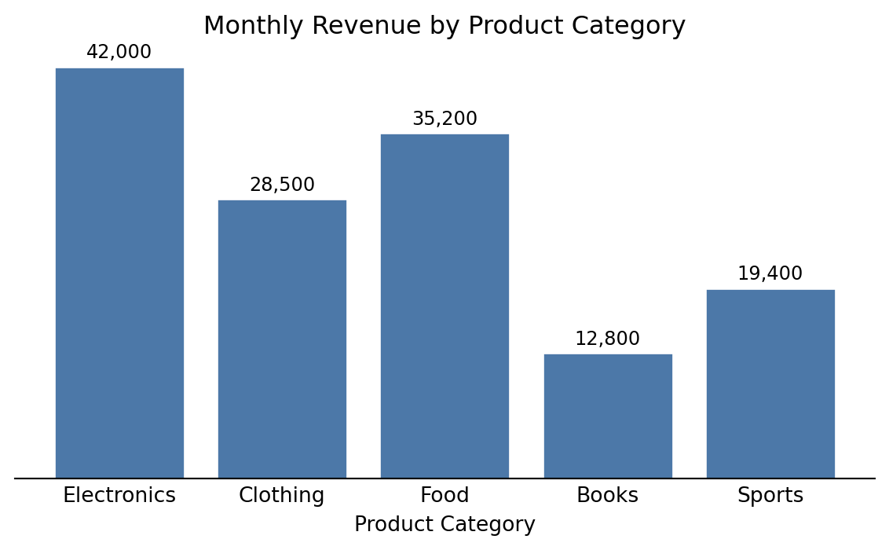

All information on the data used in the project is compiled in the data report in order to ensure the traceability and reproducibility of the results and to enable a systematic expansion of the database.
Typically, in the exploratory analysis of the acquired raw data, quality and other issues are identified, which require pre-processing, merging of individual datasets and feature engineering into processed datasets. Therefore, this template provides a separate section for the processed data, which then serves as a starting point for the modelling activities. This needs to be adapted to the specific project requirements.
1 Raw data
1.1 Overview Raw Datasets
Table 1: Overview of raw datasets used in the project.
Name
Quelle
Storage location
Dataset 1
Name/short description of the data source
Link and/or short description of the location where the data is stored, e.g. accessible to the team
Dataset 2
…
…
1.2 Details Dataset 1
Description of what information the dataset contains
Details of the data source/provider
Information on data procurement: description and possibly references to resources (download scripts, tools, online services, …). Any new team member should be able to acquire the data indepentendently following these instructions.
Legal aspects of data use, licences, etc.
Data governance aspects: Categorisation of the data based on internal business requirements, e.g. public, business-relevant, personal
If applicable: categorisation into dependent (target variable, regressor) and independent (regressor) variables
…
1.2.1 Data Catalogue
The data catalogue basically represents an extended schema of a relational database.
Table 2: Data catalogue for Dataset 1.
Column index
Column name
Datatype
Values (Range, validation rules)
Short description
1
2
1.2.2 If applicable: Entity Relationship Diagram
1.2.3 Data Chracteristics and Quality
The methods of exploratory data analysis are used to describe relevant characteristics of the data and identify data quality issues. This includes, for example,
the univariate andalysis of numerical variables:
Number or fraction
of unique values
of missing values
of zero values
of negative values
Frequency distribution
Extreme values (minimum and maximum)
Histogram
Measures of central tendency:
arithmetic mean
median
mode
Measures of dispersion and visualisation of dispersion:
and corresponding visualizations, e.g. scatter plot, heatmap, grouped box plot (for categorical-numerical relationships), …
The results the exploratory data analysis should be summarised here (code and full output in the eda subfolder) and the implications for the subsequent data pre-processing, visualization design and implementation steps should be discussed. Is the data quality and quantity sufficient to achieve the visualisation goals? Is it necessary to acquire additional or different data? Are there any limitations that need to be considered in the design and implementation of the visualisation product? Are there any specific data characteristics that can be used to enhance the visualisation design? For example, if there are a lot of missing values in a dataset, this might need to be taken into account in the design of the visualisation product, e.g. by using specific visual encodings to indicate missing values or by providing options for filtering or imputing missing values.
Tip: Ydata-profiling is a Python library that can be used to perform exploratory data analysis and generate a comprehensive report on the characteristics of the data, including the distribution of values, missing values, correlations between variables, and more. This can be a useful tool to generate the full analysis in the code section and then only include the relevant information here in the data report.
This is an example on how to incorporate executable Python code and show a figure output:
Code
import matplotlib.pyplot as plt# Sample datacategories = ['Electronics', 'Clothing', 'Food', 'Books', 'Sports']revenue = [42000, 28500, 35200, 12800, 19400]# Create the bar chartfig, ax = plt.subplots(figsize=(6, 3.75))bars = ax.bar(categories, revenue, color='#4C78A8', edgecolor='white')ax.set_xlabel('Product Category')ax.set_title('Monthly Revenue by Product Category')ax.spines['top'].set_visible(False)ax.spines['right'].set_visible(False)ax.spines['left'].set_visible(False)ax.yaxis.set_visible(False)ax.tick_params(axis='x', length=0)# Add value labels on barsfor bar, val inzip(bars, revenue): ax.text(bar.get_x() + bar.get_width() /2, bar.get_height() +500,f'{val:,.0f}', ha='center', va='bottom', fontsize=9)plt.tight_layout()plt.show()

Figure 1: Distribution of monthly revenue across product categories (sample data).